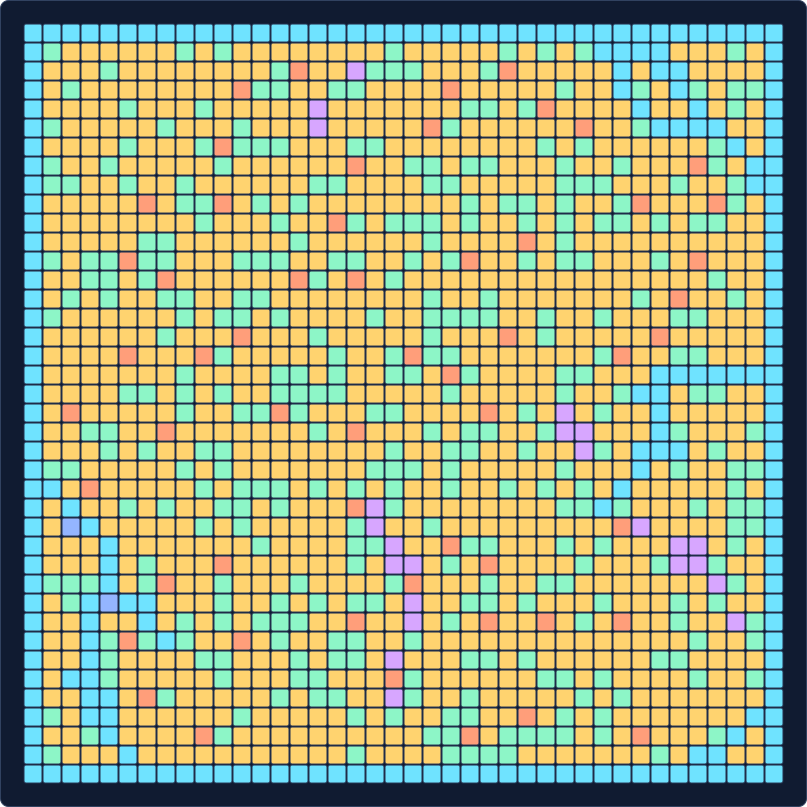
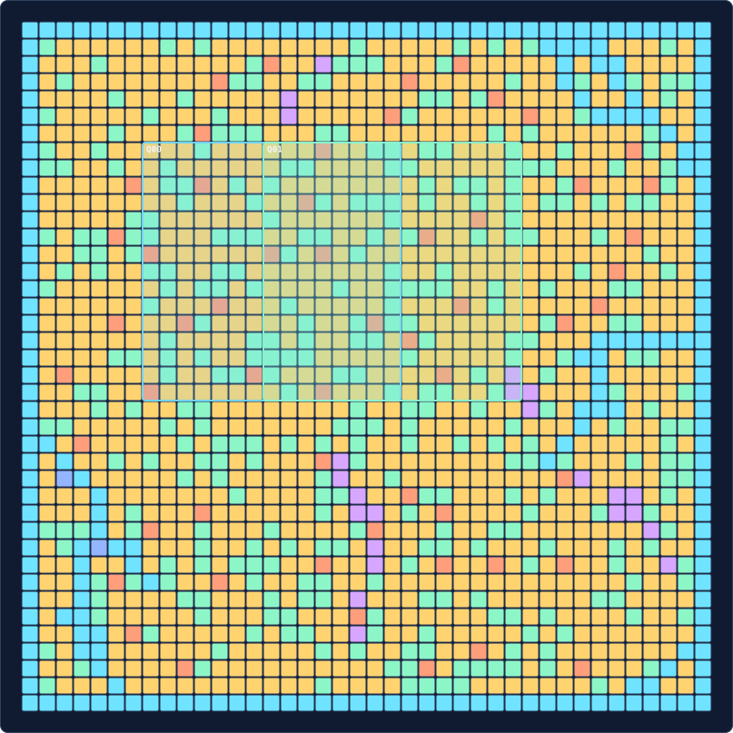
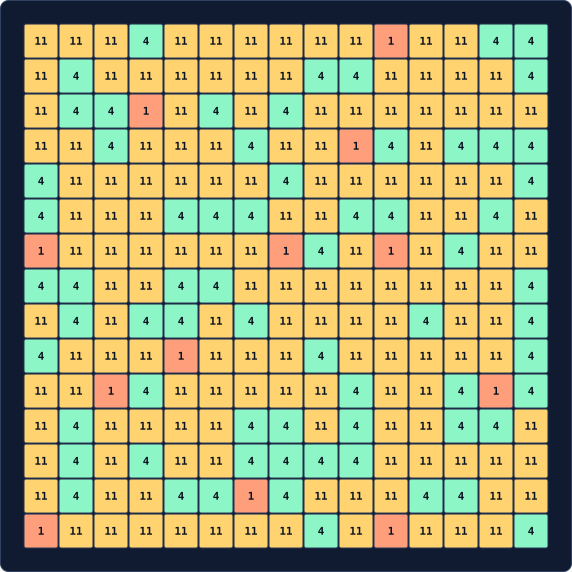
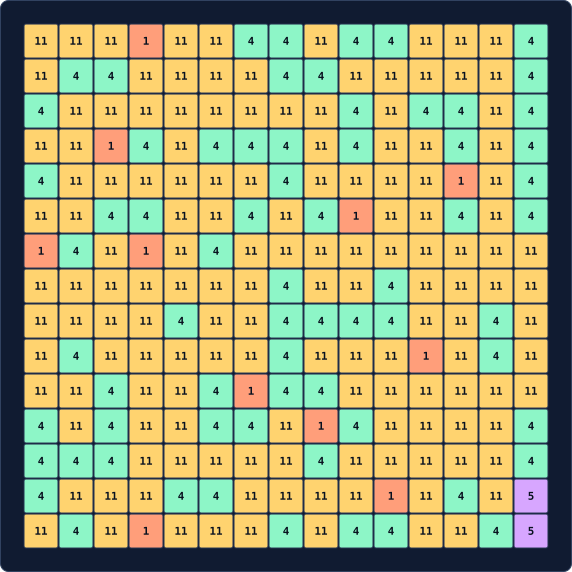

Start state
The raw grid is rendered without overlays so you can inspect the starting world state before queries accumulate.

Astar Island / solver debug view
Static, local-first debug output for inspecting the start grid, every queried viewport, and the saved screenshot artifacts without adding a frontend stack.
The raw grid is rendered without overlays so you can inspect the starting world state before queries accumulate.

Each query is drawn on top of the same grid. Labels match the query step number used in the screenshot artifact names.

Values are colored consistently across the start grid and all viewport screenshot artifacts.
Viewport screenshots are written as SVG files with stable filenames that include the query order, step, and rectangle coordinates.
planned viewport preview
15×15 at (7, 7)000query-000_step-000_x-007_y-007_w-015_h-015.svg
screenshots/query-000_step-000_x-007_y-007_w-015_h-015.svgplanned viewport preview
15×15 at (14, 7)001query-001_step-001_x-014_y-007_w-015_h-015.svg
screenshots/query-001_step-001_x-014_y-007_w-015_h-015.svg{kind=link}
{kind=link}